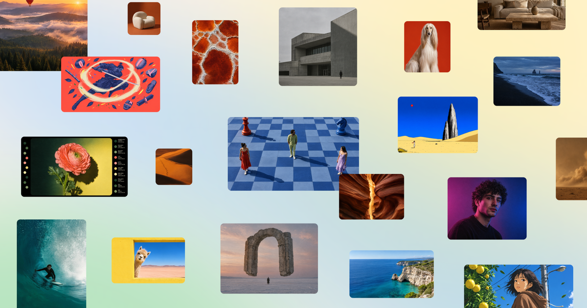

22 октября Canva официально представила Craft — свою первую модель генерации изображений, разработанную подразделением Canva Research. Модель создаёт картинки разрешением до 2K, поддерживает больше 30 соотношений сторон и, главное, уверенно размещает на изображении текст на 55 языках — слабое место большинства генераторов. Сам промпт можно писать на любом языке.
Craft работает в два этапа. Сначала отдельная модель составляет план композиции: определяет объекты, их расположение, масштаб, визуальную иерархию и надписи. Только затем вторая модель превращает этот план в готовое изображение. Такой «сначала чертёж, потом картина» подход — попытка взять от генерации не только красоту, но и дизайн-дисциплину.
В обучении Canva использовала миллионы шаблонов, созданных людьми: постеры, публикации для соцсетей, презентации, инфографику и макеты с плотным текстом. После этого модель дообучали вместе с профессиональными дизайнерами — на внутренних проверках они с исследователями оценили больше 25 000 пар изображений. В своём анонсе компания заявляет, что Craft выводит Canva Research в число вторых по продвинутости ИИ-лабораторий мира в генерации изображений.
Craft уже доступна в разделе Dream Lab для всех пользователей Canva, но безлимитной генерации нет: запросы через API расходуют ИИ-кредиты аккаунта. Разработчики могут вызвать модель напрямую, указав идентификатор `craft_v1_2k`. В компании также обещают ускоренные версии Craft-fast и Craft-ultrafast — про их сроки ничего не сказано.
Canva давно монетизирует шаблоны и дизайн-инструменты, и собственная модель вместо чужих API — это и контроль над затратами, и козырёк в конкуренции с Adobe. А датасет из человеческих шаблонов — редкий пример, где главным учебным материалом стала не «весь интернет», а аккуратно собранная дизайн-библиотека.